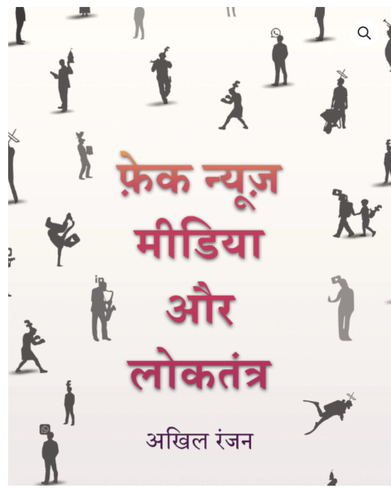

Revealed: Israeli arms imports to UK surged during Gaza war
Figures from the UN Comtrade database show UK imports from Israel of arms, ammunition and related parts increased from just £55,000 in 2023 to almost £5.9 million in 2025.
Read report →I am a London-based bilingual (English & Hindi) media professional with proven experience in social listening, open-source intelligence (OSINT) and multimedia storytelling. I have worked with global media and tech organisations, including the BBC, AFP, Twitter (X) and ICFJ, and hold a master’s degree in Investigative Journalism from City St George’s, University of London. Currently, I am working as a freelance journalist and research consultant, and open to research projects, training workshops, and cross-border collaborations.
Got a tip, an idea, or a project I can help with?
Let's connectSelected Work
Figures from the UN Comtrade database show UK imports from Israel of arms, ammunition and related parts increased from just £55,000 in 2023 to almost £5.9 million in 2025.
Read report →Agribusiness companies enlisted an army of Brazilian social media influencers ahead of the UN climate summit in Belém, where the meat industry’s role in deforestation is high on the agenda.
Read report →Amid the streaming platform’s growing popularity, it is also witnessing a spike in hateful content and scripted videos posted as vox pops and public opinions.
Read report →Beyond the Byline
